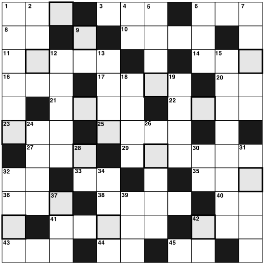

クロスワード
【→ PDF（印刷用）】

- タテのカギ
-
- １. お店などが営業を休むこと。
- ２. 普通ではない様子。［形容詞］
- ４. 沖縄にはアメリカ軍の○○がある。
- ５. 辛みと香りのある野菜。「○○○○がないなら、○○○○ない。」
- ６. 心を落ち着いた状態にしたり、精神的な不安をなくすこと。
- ７. 「おめでとう○○○○○。」［敬語表現］
- ９. その人が当然行なわなければならないこと。
- 12. 論文は○○○○○に書かなければならない。［ナ形容詞］
- 13. 仕事のない休みの日のこと。
- 15. 仕事などの疲れをとり、気分を変えるための娯楽活動のこと。
- 18. すべてが売れて、商品がなくなった状態。
- 19. 『対面』は何と読む？
- 24. 容積の単位。１日に水を２○○○○飲む。
- 26. ○○○○○ペーパー。
- 28. 『縦』の反対は？
- 30. ○○コーラ。
- 31. 急行より速いが新幹線より遅い。
- 32. 日光が当たること。
- 34. 仲良しの人のこと。
- 37. 一定の範囲の地域のこと。
- 39. 沈んで下がること。地盤○○○。
- 42. 「モ〜〜」と鳴く動物は？
- ヨコのカギ
-
- １. 忘れずに覚えていること。「○○○にございません。」
- ３. 過去から現在までのものごとの変化の記録のこと。
- ６. 赤くておいしい果物。
- ８. 部屋のいちばん下の面のこと。
- 10. その本や文章を書いた人のこと。
- 11. 『前向き』の反対は？
- 14. 下に対して指示や命令をすること。
- 16. 市議会○○○。国会○○○。
- 17. 昼と夜の間の時間。
- 20. 大きな動物。サケを食べて、木にも登る。
- 21. 食べ物を作ること。フランス○○○○。
- 22. 『英国』は何と読む？
- 23. 商品を売る方の人。
- 25. 大切な郵便はこれで出す。
- 27. 月が出ていて明るい夜のこと。
- 29. 服が濡れないように、雨の日に着るもの。
- 32. 人間。
- 33. 『物』の反対は？
- 35. 個人の不注意によって起こった失敗のこと。
- 36. 足を使って移動すること。［動詞］
- 38. 蒸した米からお餅をつくる方法。お正月などに行なう。
- 40. 結果を最初から想像していること。
- 41. さらに程度が多いこと。「今日は○○○○○お美しいですね。」［副詞］
- 42. 『運輸』は何と読む？
- 43. 得をしたお金。得になること。
- 44. １階の下は○○１階。
- 45. 夏から秋においしい果物。「○○なのにある。」
【→ 解答を見る】